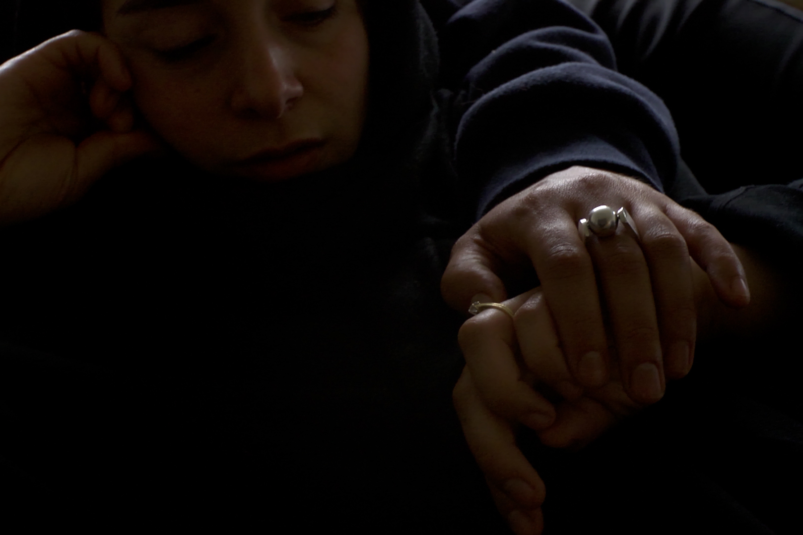
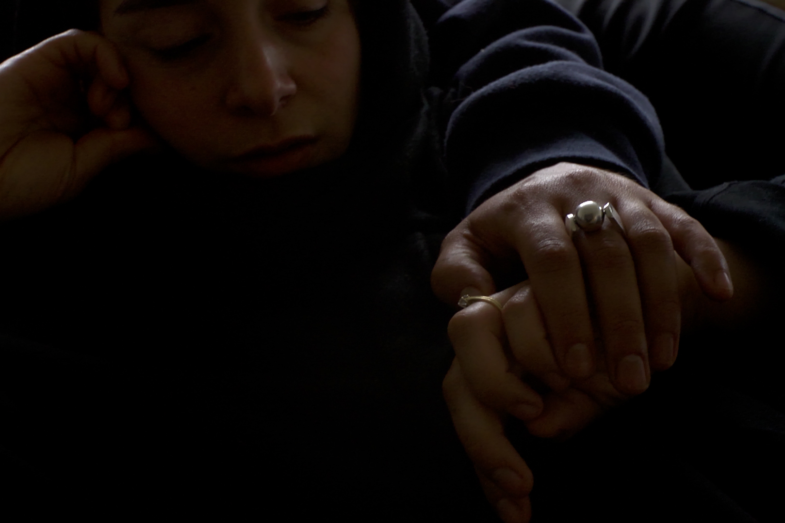

Our work
Learn more about passed projects, where GIGI films has collaborated with other artists, new actors and casting directors.Ana + Yek
Ana + Yek (Me + You) follows twin sisters Sanaa and Zohra. What begins as Zohra’s exploration of their Moroccan heritage gradually reveals the shifting dynamics of their relationship, as Sanaa’s deepening love for Islam becomes more apparent. The film unfolds as a journey of mutual understanding — a cinematic dialogue fueled by their desire to connect. An intimate portrait of sisterly love and independence.Rupture
GIGI Casting
Gigi Casting focuses on streetcasting. Aiming for more diversity and authenticity on screen. GIGI Casting guides new talent before set, supports talent on set and counsels talent after set in taking the next steps towards a artistic practice.Casting Calls